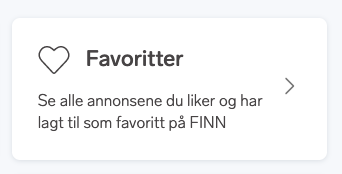

Fabric Concepts
## utility classes
## customised subset of Tailwind classes
Lets make a FINN page
So lets pretend we get a task to create a FINN page, we will use the Min FINN page as an example.
Screenshot, minfinn on smaller screen
{kind=link}
Screenshot, minfinn

As we can see the main layout follows the same pattern as most pages on finn.
We will dig a little deeper into the main menu part of it.

1. Getting setup
If not already done, there is a compehensive setup-guide to get up and running.
2. Header/Footer
The top-bar and Footer are standard finn components (excists as podlets) We will ignore these for now. FINN Header podlet on github FINN Footer podlet on github
3. Page-container
The purpose of this is to keep the page align correctly across the site, making it scale correctly on different window sizes/devices, and also keep it nice and tidy inside the outer banners.
The sketch shows a background going full width outside the page-container, so we need to wrap it inside something that holds the background-color.
<div class="bg-blue-100">
<div class="page-container"> ... </div>
</div>
4. Grid
Thinking mobile first we just need standard div (display:block) behavior to get the 1 col layout we need on smaller devices.
<div> ... </div>
We add a grid to help us with the layout. The grid can start at the medium (md:) breakpoint and up from there giving us multiple columns only when we need them.
<div class="md:grid"> ... </div>
Adding 2 columns from medium breakpoint, and 3 columns from large and up.
<div class="md:grid md:grid-cols-2 lg:grid-cols3"> ... </div>
5. Adding cards
React/Vue/Element cards? Maybe choose one and show how its done? Card in React Card in Vue Card in Element
6. Card content
Screenshot, card content on smaller screens
Screenshot, card content on larger screens

Looking at the layout for each card we would need a little bit of markup to start with, something like:
<div>
<div>
<svg></svg>
<a href="#">Title</a>
</div>
<p>text-content</p>
</div>
Starting with the title, this should prob be the main linked item for the card.
Screen readers do not like it if we wrap a whole card of content like this inside, neither a button or an A tag, the screenreader would treat all the content as one very long sentence with no other structure.
The card component uses a trick where the A element (its required to have either an A element or a Button element to make a card component clickable) interactive area is stretched to the size of the full clickable card, so this is perfect for this use-case:
We vertically center the icon and the title with flex.
<div>
<div class="flex items-center">
<svg></svg>
<a href="#">Title</a>
</div>
<p>text-content</p>
</div>
Dependent on the final page markup structure we probably want to wrap this title in an appropriate H tag. The H tags should be used in a semantic way, forming a clear tree structure not skipping any levels. The sizes and look of them can be set using the t1-t5 class.
<div>
<div class="flex items-center">
<svg></svg>
<h3>
<a href="#" class="ml-16">Title</a>
</h3>
</div>
<p class="pt-8">text-content</p>
</div>
The text-content bit is supposed to be hidden on mobile, since the responsive setup in Fabric is mobile first, we need to hide it for smaller devices and then un-hide it for bigger ones. This is easy using classes hidden and md:block.
One thing to consider is if this hidden content should be available for screen-readers, even when hidden visually.
<div>
<div class="flex items-center">
<svg></svg>
<h3>
<a href="#" class="ml-16">Min konto</a>
</h3>
</div>
<p class="pt-8 mr-8 hidden md:block">Se dine opplysninger på FINN og Schibstedkonto</p>
</div>
The friendly UX person is now annoyed because we forgot the arrow to the right on the card, but that is no problem, we just wrap around another flex container.
<div class="flex items-center">
<div>
<div class="flex items-center">
<svg></svg>
<h3>
<a href="#" class="ml-16">Min konto</a>
</h3>
</div>
<p class="pt-8 mr-8 hidden md:block">Se dine opplysninger på FINN og Schibstedkonto</p>
</div>
<div class="ml-auto">
<svg></svg>
</div>
</div>
Card Content example on Tailwind.play
7. Serving SVG's
Fabric comes with its own Icon library